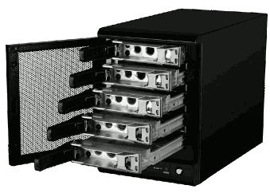

Els dispositius d'emmagatzematge de dades es divideixen en dues categories principals:
Los dispositivos de almacenamiento de datos se dividen en dos categorías principales:
- L'emmagatzematge de connexió directa o DAS (Direct-Attached Storage), funciona connectat directament a l'ordinador que l'utilitza o al servidor, però no connectat a la xarxa. Els dispositius DAS inclouen disquets, discos òptics com els discos compactes (CD) i els discos de vídeo digital (DVD), unitats de disc dur (HDD), unitats flash i unitats d'estat sòlid (SSD).
DAS s'utilitza quan es necessita un alt rendiment i una gran capacitat d'emmagatzematge amb una configuració senzilla i un baix cost. És una opció d'emmagatzematge pràctica per a les pimes que necessiten sistemes d'emmagatzematge senzills i no necessiten compartir dades en tota l'organització. - L'emmagatzematge en xarxa permet que més d'un ordinador accedisca a ell a través d'una xarxa, la qual cosa és millor per a compartir dades i col·laborar. La seua capacitat d'emmagatzematge extern també ho fa més adequat per a còpies de seguretat i protecció de dades.
- Emmagatzematge connectat a la xarxa o NAS ( Network Attached Storage ): consisteix en un contenidor de discos durs que inclou intel·ligència addicional per a l'ús compartit i l'autorització d'arxius. Empra la tecnologia denominada matriu redundant de discos independents (RAID, Redundant Array of Independent Disks), pot distribuir i duplicar dades emmagatzemades a través de diversos discos durs. Aquesta redundància garanteix la resiliència de les dades en cas que falle alguna de les unitats de disc. Resulten versàtils, flexibles i escalables. Permeten ampliar solucions existents a mesura que augmenten els requisits d'emmagatzematge. Solen tindre ports USB per a connectar impressores.
- Xarxa d'àrea d'emmagatzematge o SAN ( Storage Area Network ): xarxa dedicada de dispositius d'emmagatzematge que s'utilitza per a proporcionar un grup d'emmagatzematge compartit al qual poden accedir diversos ordinadors i servidors.
| NAS | SAN |
|
|
Tipus de dispositius d'emmagatzematge
- Emmagatzematge SSD i flash: és una tecnologia d'estat sòlid que utilitza xips de memòria flash per a escriure i emmagatzemar dades. Abasten des d'unitats USB fins a matrius de nivell empresarial. Una unitat flash de disc d'estat sòlid (SSD) emmagatzema dades mitjançant la memòria flash. En comparació amb els HDD, un sistema d'estat sòlid no té parts mòbils i, per tant, té menys latència. Atés que la majoria dels SSD moderns estan basats en flash, l'emmagatzematge flash és sinònim d'un sistema d'estat sòlid.
- Unitat de disc flash SSD: unitat flash de disc d'estat sòlid (SSD).
- Matriu d'emmagatzematge: combina diverses unitats de disc per a permetre l'emmagatzematge de dades basat en blocs. Separa l'emmagatzematge de les funcions de connexió i comunicació de xarxa per a proporcionar més capacitat que un grup de servidors d'arxius.
- All flash array: usen només memòria flash per a l'emmagatzematge. Aquestes modernes arquitectures estan dissenyades per a maximitzar el rendiment i la capacitat d'emmagatzematge, sense les limitacions de les funcions heretades de les xarxes d'àrea d'emmagatzematge (SAN) SSD. Tenen una latència ultrabaixa i alta disponibilitat.
- Emmagatzematge NVMe: interfície que s'utilitza per a accedir a l'emmagatzematge flash a través d'un bus d'interconnexió ràpida de components perifèrics (PCIe). NVMe permet milers de sol·licituds paral·leles en una sola connexió. Elimina la sobrecàrrega entre les aplicacions i l'emmagatzematge i millora significativament el rendiment.
- Unitat de disc flash SSD: unitat flash de disc d'estat sòlid (SSD).
- Emmagatzematge en disc dur: utilitzen maquinari electromecànic per a emmagatzemar informació digital. Són rendibles i ideals per a l'emmagatzematge a llarg termini i per a arxius grans. Els discos durs són vulnerables al mal físic amb el temps i tenen problemes de latència derivats de la mobilitat d'alguns components. Igual que amb els discos SSD també existeixen matrius de HDD que combinen diversos discos per a solucions de major capacitat.
- Emmagatzematge híbrid: les unitats SSD i flash ofereixen un major rendiment que les unitats de disc dur, però poden ser més cares. Moltes organitzacions adopten un enfocament híbrid, combinant la velocitat del flash amb la capacitat d'emmagatzematge dels discos durs. Una infraestructura d'emmagatzematge equilibrada permet a les empreses aplicar la tecnologia adequada per a diferents necessitats d'emmagatzematge.
- Emmagatzematge en el cloud (en el núvol): ofereix una alternativa escalable i rendible per a emmagatzemar arxius, en discos durs o xarxes d'emmagatzematge locals. Els proveïdors de serveis en el cloud, permeten guardar dades i arxius en una ubicació externa a la qual s'accedeix a través de la internet pública o una connexió de xarxa privada específica. El proveïdor allotja, protegeix, administra i manté els servidors i la infraestructura associada, garantint que tinga accés a les dades sempre que els necessite.
- Emmagatzematge en el cloud híbrid: combina elements del cloud públic i privat. Amb el cloud híbrid, les organitzacions poden triar en quines cloud emmagatzemar les dades. Per exemple, per a dades altament regulades subjectes a estrictes requisits d'arxivat i replicació, és més adequats un entorn de cloud privat, mentre que les dades menys sensibles, es poden emmagatzemar en el cloud públic.